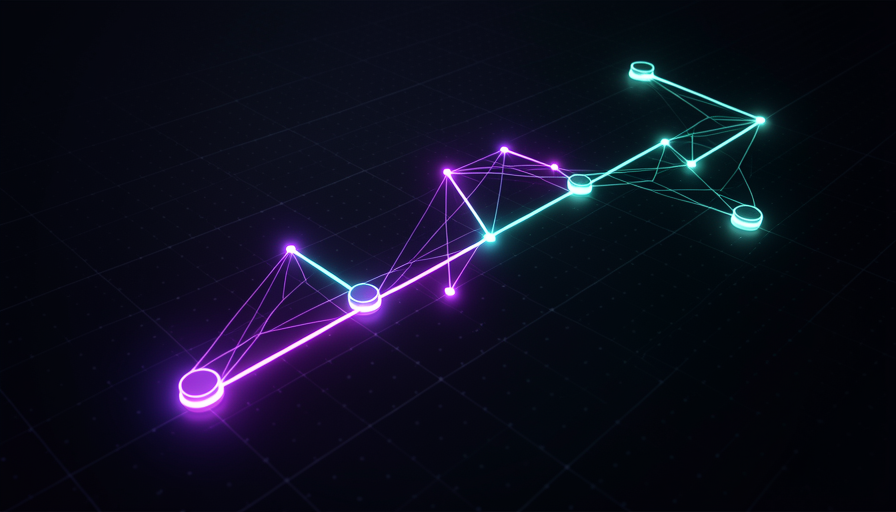
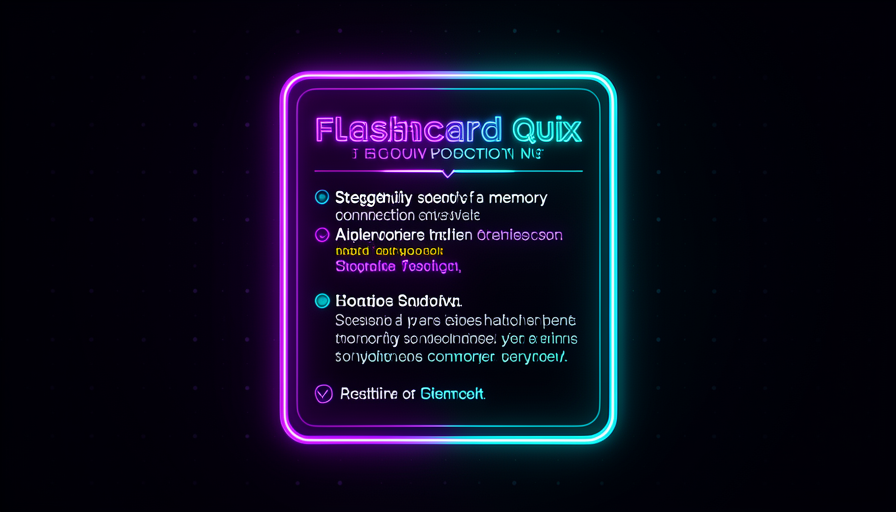
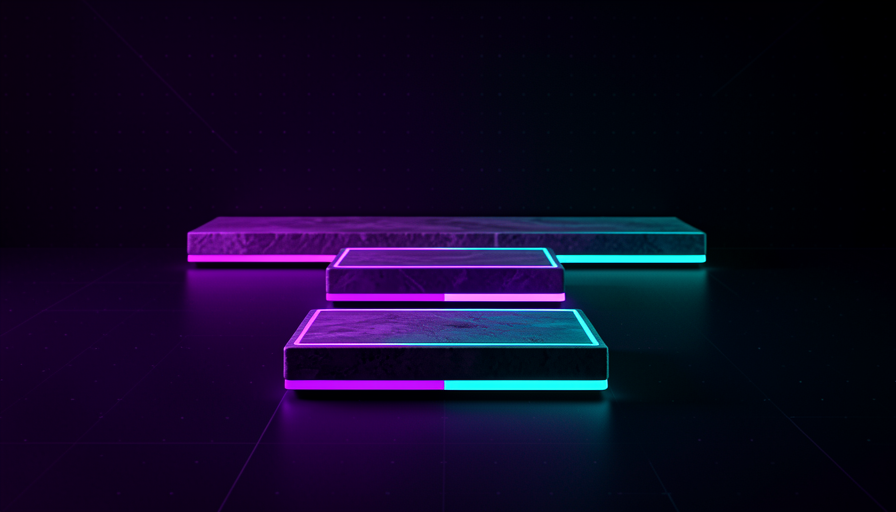

📖 Living glossary (read first — come back whenever you need to)
These are the terms new from this module (you’ve already covered the foundation — model, agent, skill, context — in Tracks 1 and 3). Remember these before moving on:
🎯 Zone of proximal development
🧠 Imagine it this way: A well-made video game. If the level is too easy, you get bored and quit. If it’s impossible, you break the controller. The game keeps you engaged when each level is just one step above what you already know — challenging, but achievable with a little effort. This step is exactly where you grow.
The first thing the Teach skill has “encoded” (embedded in the instructions) is a classic concept in pedagogy: the zone of proximal development (ZDP). The idea, developed by psychologist Vygotsky, divides any subject into three zones: what you can already do it on its own, what you can with help (the ZDP), and what is too far for now. Teaching well means aiming for the middle range—neither repeating the obvious nor dumping something you don't yet have the foundation to handle.
Why does this matter for an AI skill? Because an agent’s default mistake without this instruction is to throw a data dump: it dumps everything it knows about the topic all at once. You read it, think it’s great, and forget it in 10 minutes—nothing stayed in the ZPD; it just passed right over you. Pocock sums up the goal: "teaching is not getting info into your head but orienting you in the world" — teaching isn't stuffing information into your head; it's guiding you through the world. That's why the skill first finds out where you are (your starting point) for calibrating the next step within your ZPD. Common mistake: thinking that "a good lesson = a complete lesson." A good lesson is a lesson on the right rung; completeness becomes noise when it goes beyond your zone.
The ZPD is the glowing ring: neither the core (I already know this) nor the edge (too far away).

⚠️ Common beginner mistake
Ask "explain everything about X" and get a wall of text. Without targeting the ZPD, the AI delivers volume—not learning. The right approach is for the skill to ask where you are before teaching.
In one sentence: you learn on the next rung—not one you already know, nor one that’s too far out of reach.
Going deeper (optional): where does "ZDP" come from?
The term comes from Soviet psychologist Lev Vygotsky (1930s). He observed that children can solve problems with an adult’s help that they can’t yet solve on their own—and that learning takes hold precisely in this “assisted” range. Decades later, this became the basis for the concept of scaffolding (scaffolding): provide just enough support, then gradually remove it as the person grows. The Teach skill is, at its core, automatic scaffolding.
🌐 Knowledge as a graph
🧠 Imagine it this way: A forest seen from above. The trees are the concepts; the trails connecting them are the dependencies (“to reach this clearing, pass through that one first”). You can’t “read a forest from left to right” as if it were a list — it has branches, shortcuts, and dead ends.
Pocock explicitly describes the knowledge as a graph — or a forest. A graph is just this: nodes (each concept) connected by edges (each relation: "to understand A, you need B"). Learning Git, for example: "commit" depends on understanding "file" and "change"; "branch" depends on "commit"; "merge" depends on "branch." It's not a straight line — it's a network where everything builds on something that came before.
Why is this view powerful? Because it explains why so many explanations fail: they try to teach you a node without you having its parent nodes. It's like reading chapter 7 without having read 1 through 6 — the words go by, but they don't stick, because they have nothing to anchor to. The graph also shows that there are many possible paths to the same destination, and that some are dead ends for you (depend on things you don't have yet). Common mistake: treating a subject as a "list of topics" and studying out of order. Without respecting the graph's edges, you keep jumping between disconnected nodes and nothing connects.

In one sentence: knowledge is a forest of connected concepts, not a list — each node builds on the ones before it.
🛤️ Linear path through the graph
🧠 Imagine it this way: A trail guide in a huge forest. The forest has a thousand paths, but the guide takes you a route: clearing by clearing, in the order that makes sense, without getting lost. You don’t need to see the whole forest — just the next step, and the guide that knows the map.
Here's the Teach skill's trick. Knowledge is a graph (topic 2), but you can’t learn a graph — your attention is linear, one concept at a time. So the skill does the translation: it traces a linear path by the graph. In Pocock’s words, the skill sees knowledge as a forest and “creates a linear path through the graph.” It chooses which edge to follow now, respecting your dependencies and your ZPD—and postpones the rest.
In the video demo, it does this for one vibe coder that wants to fill in gaps: the path starts with git (the “undo button”), then reading error messages, then debugging, then how software is delivered, then testing—a deliberate order, with each step building on the previous one. The skill also maintains the learning record to remember where you are along the way, and tells you to read the primary source (in the case of Git, the Pro Git book) instead of just trusting its summary. Common mistake: wanting to “see the whole map” before starting. The linear path exists precisely so you don’t get stuck in the vastness of the graph — trust the next step.
Same graph as topic 2, now with the linear path lit up (the vibe coder’s route in the demo).
🔬 Worked example: the Teach skill mapping your path
You install the skill (npx skills latest add → choose “teach”) and say the mission, not the subject: "I want to deliver better software; I have a Next.js app that I work on with vibe coding, but I break things and don't know how to undo them." See what the skill does, in order:
- Align the mission — asks what you build, what “better software” means to you, and what specific project you have in mind. Creates the MISSION.md.
- Locate in the graph — see that your meta-goal (“not breaking things / knowing how to undo them”) depends on git, and that git is your starting point.
- Map the linear path — git → read errors → debugging → deploy → tests. Defer everything that's not in your ZPD right now.
- Customize — checks your machine (is git installed?), generates a cheat sheet + the 1st lesson in HTML (opens in the browser, richer than the terminal), with real exercises in the terminal.
- Points to the primary source — tells you to read the book Pro Git and invites you to ask questions and request the next lesson.
Result: you don’t get “a git course.” You get your path through the git graph — calibrated to your mission.
In one sentence: the skill turns the forest (graph) into a trail (linear path) you can actually walk.
🧠 Quizzes and recall
🧠 Imagine it this way: reading a map a hundred times won't make you remember the way. But trying to walk the path with your eyes closed once—and making mistakes and correcting them—imprints the route. Rereading is recognizing; trying to remember is encoding.
This is the part that most distinguishes the Teach skill from a "polished summary." It uses quizzes on purpose—and Pocock is emphatic: "quizzes are unreasonably effective" (quizzes are incredibly effective). The reason has a name in learning science: recall (active recall). Every time you pulls an answer from memory instead of just rereading strengthens the neural pathway for that knowledge.
The technical effect: the quiz increases the storage strength (retrieval strength) — exactly what Pocock says the skill aims for: “uses quizzes to increase retrieval strength.” Rereading gives you a illusion of familiarity (you recognize the text and think you know it), but recognizing ≠ recalling. That's why the skill's lessons come with real exercises in the terminal, not just multiple-choice questions: the exercise is the strongest form of recall there is—you produce the answer in the real environment. Common mistake: "studying" by rereading. Rereading is comfortable and almost useless for retention; the discomfort of trying to remember is exactly the sign that it's working.
Quick recall: why does the Teach skill prefer quizzes to just rereading?
In one sentence: retrieving the answer from memory (recall) builds retention; rereading only provides recognition — hence the quizzes.
⏳ Spaced repetition
🧠 Imagine it this way: watering a plant. A whole bucket of water at once drowns the roots and runs off. A little water at the right intervals helps the plant grow strong. Memory works the same way: spaced-out drops beat cramming everything into one review.
Quizzes reinforce learning (topic 4), but memory leaks over time — is the “forgetting curve.” The antidote is spaced repetition (spaced repetition): review the same concept again just before you forget it, at intervals that growing (1 day, 3 days, 1 week, 1 month). Each successful review lengthens the next interval. It's the opposite of "staying up all night studying": the cramming fills your head for hours and empties it in days.
Where does this fit into the Teach skill? This is where the fact that it’s a stateful skill (we saw in 3.3) makes a difference. Since it keeps the learning record, it knows what you’ve already seen and when — so it can bring you back to old concepts at the right moment, instead of just pushing new content. The structure itself—“finish the lesson, ask for the next one, revisit the primary source”—builds spaced repetition into the routine. Common mistake: learn it once and never revisit it. Without spacing, even strong recall fades—real retention requires revisiting, not just visiting.

In one sentence: reviewing at increasing intervals (drops, not buckets) beats the forgetting curve.
🎚️ Customization
🧠 Imagine it this way: A private tutor who already knows your desk, your tools, and your goal — and therefore never teaches you what you already know or what isn’t useful to you. It’s the opposite of a generic workbook that’s the same for everyone.
Everything we’ve seen — ZPD, graph, linear path, recall, spaced repetition — works only because the skill knows you. It starts from your mission ("talking to a teacher; the agent is my teacher", says Pocock), checks your machine setup (git installed? which project?), and saves everything in the learning record. That's why the 1st lesson is already tailored: the cheat sheet is for your case, the exercises run in the your terminal.
It’s this combination — real learning principles + personal state — that makes Pocock call the Teach skill "extremely effective" and tell them that learned the Rubik’s Cube with her and can solve it from memory. The bigger lesson for you as a skill builder: teaching that sticks isn't "explaining well"; it's orchestrate (target the ZPD, walk the graph in a line, force recall, space out reviews) based on who the person is. Common mistake: asking “teach me X” in general. State the mission and starting point — that’s what enables personalization. Use the prompt below as a starting point:
# Acione a teach skill pela MISSÃO, não pelo assunto. # (instalar antes: npx skills latest add → escolher "teach") Use a teach skill comigo. Minha missão: quero entregar software melhor — tenho um app em Next.js que eu mexo no vibe-coding, mas quebro coisas e não sei desfazer com segurança. Antes de ensinar: 1. Descubra meu ponto de partida (o que eu já sei / não sei). 2. Trace um caminho linear pelo grafo, respeitando a ZDP. 3. Cada lição: HTML no browser + exercício real no terminal. 4. Use quizzes pra fixar (recall) e me lembre de revisar o que vimos antes (spaced repetition). 5. Aponte a fonte primária e salve no learning record.
Quick recall: when activating the Teach skill, what should you talk about first?
In one sentence: teaching that sticks is orchestration (ZPD + graph + recall + spacing) on top of whoever you é.
🧾 Module Summary
Next module:
3.5 — Grill-me & adversarial skills: the skill that interviews you and aligns understanding before to code.